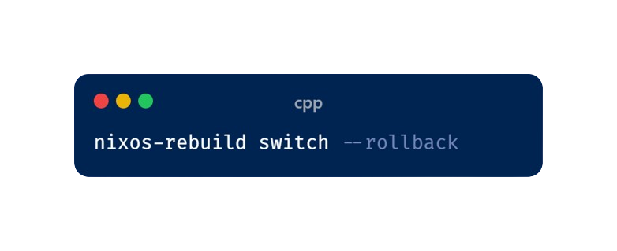

What is NixOS ?
NixOS is a Linux based Operating System based on the Nix package manager. Unlike
traditional distributions such as Ubuntu, Arch, or Fedora, where software installations modify
system state unpredictably, NixOS ensures a consistent environment through declarative
configuration management.

Nix Package Manager :The Nix Package Manager is a tool that installs and manages
software very carefully. It keeps each program in its own “bubble,” so different versions of
software won’t interfere with each other.
Features of NixOS :
1 : Declarative System Configuration : In NixOS, the entire system configuration
is
written in a single file (/etc/nixos/configuration.nix). Users define the system state
(packages, services, configurations) in this file, and the system ensures that the desired
state
is always maintained.
2 : Reproducibility : Since the entire system state is defined in a single file,
you can reproduce the same environment on different machines by simply copying the
configuration file.
Due to Reproducibility Nix is especially useful
for developers, server admins, and scientists who need consistent
environments across multiple systems.
Features of NixOS : (Continued)
3. Atomic Upgrades and Rollbacks :
Every change in NixOS creates a new generation of the system.If an update breaks something, you
can
instantly rollback to the previous working state using:

Unlike traditional package managers (APT, DNF, Pacman), where package upgrades can cause
partial system failures, NixOS ensures atomic changes, meaning the system is always in a
valid state.
4. Package Management Without System Pollution :
Traditional Linux distros install software in shared directories (/usr/bin, /lib, etc.), which can
lead to dependency conflicts.Nix uses a unique approach: every package and its dependencies are
stored in the /nix/store with unique cryptographic hashes.
Features of NixOS : (Continued)
5. No More "Broken Systems" Due to Failed Updates :
In traditional Linux distros, if an upgrade fails halfway, your system may become unusable.
Updates are transactional, meaning either they complete successfully, or they don't apply at all.
6. User-Specific Environments (No Root Needed) :
Users can install packages without root permissions, thanks to profiles.
Each user gets a separate environment, reducing conflicts.
Example :
nix-env
-iA nixpkgs.firefox
7. Garbage Collection :
Since packages are immutable, old versions accumulate in /nix/store.
You can remove unused packages with:
nix-collect-garbage
-d
Feature Comparison
| Feature |
Traditional Linux Distros |
NixOS |
| Package Management |
APT (Debian), Pacman (Arch), DNF (Fedora) |
Nix |
| Configuration |
Manual (files scattered across /etc/) |
Declarative (configuration.nix) |
| Rollbacks |
Not easy or requires snapshots |
Instant and built-in |
| Dependency Handling |
Shared libraries, prone to conflicts |
Isolated packages in /nix/store |
| Upgrade Safety |
Risk of breaking system |
Atomic updates |
| Reproducibility |
Hard to replicate across machines |
Perfectly reproducible |
| Multiple Versions of Software |
Difficult to manage |
Seamlessly supported |
Use Cases for NixOS

1. DevOps & CI/CD :
Ensures identical environments across developers’ machines and CI/CD pipelines.
No "works on my machine" issues.
2. Software Development :
Developers can use multiple versions of the same software without conflicts.
Example: Having Python 2.7, 3.8, and 3.10 installed simultaneously.
3. System Administrators :
Rollbacks and atomic updates make managing servers easier and safer.
4. Research and Science :
Scientists needing reproducible computational environments benefit from the declarative approach.
5. Security :
Since packages are immutable, there is less risk of accidental modification.
No more accidental "rm -rf /usr/bin" disasters.
Downsides of NixOS
1. Steep Learning Curve:
Nix’s functional programming language is unusual for system configurations.
Learning to write configuration.nix takes time.
2. Smaller Community:
Compared to Ubuntu, Fedora, or Arch, NixOS has a smaller user base.
Finding help may take longer.
3. Storage Overhead:
Since packages are stored uniquely with hashes, disk usage can be high.
Regular garbage collection is needed.
Key Features of the Nix Language
The Nix language is a purely functional, domain-specific language (DSL) designed for declarative
package management and system configuration. It is used primarily in Nix, NixOS, and Nixpkgs to
define system states, package builds, and configurations.
- Purely Functional: No side effects, same input produces same output.
- Declarative: You describe the desired state, and Nix ensures it.
- Lazy Evaluation: Expressions evaluate only when needed.
- Strongly Typed: Works with integers, strings, lists, sets, functions, etc.
- Package-Oriented: Built to define and manage software dependencies cleanly.
How to create a nix package
Step 1: Create a Directory :
Step 2: Create a Bash Script
Package Creation (continued)
Step 3: Write a default.nix
Step 4: Build the Package
This will create a package in ./result/, and you can run it using:
3. Packaging an External Source Code
We can package package a C program or fetch source code from
GitHub by using the fetchurl or fetchFromGitHub functions.
Example: Packaging htop
(from GitHub)
Installing & Unistalling
We can install thepackage by :
To unistall :
Thank You!
Thanks for exploring NixOS with us!
We hope you've gained valuable insights into this unique Linux distribution and its powerful package management system.
\]]
Further Resources:
NixOS Website: nixos.org
Nix Package Repository: search.nixos.org/packages
NixOS Wiki: nixos.wiki